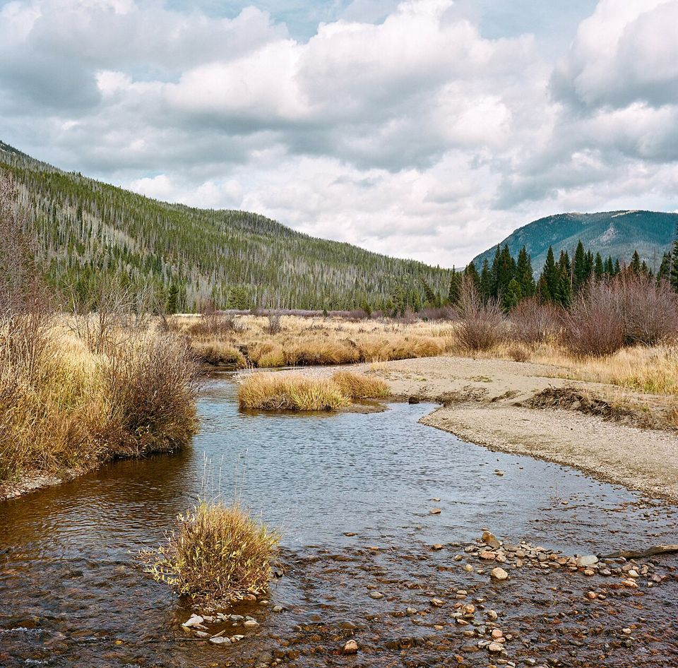
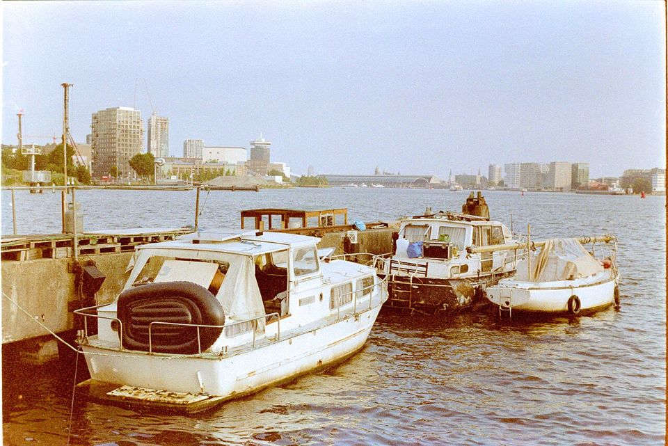

36 EXP. / 필름 비교 / Kodak Portra 400 vs Gold 200
Kodak Portra 400 vs Gold 200
둘 다 Kodak 컬러 필름이지만 쓰임이 다릅니다. 흐린 날·그늘까지 한 롤로 버티려면 Portra 400, 맑은 날 따뜻한 색을 싸게 남기려면 Gold 200입니다.


한눈에 비교
| Kodak Portra 400 | Kodak Gold 200 | |
|---|---|---|
| 감도 | ISO 400 | ISO 200 |
| 현상 | 컬러 네거티브 · C-41 | 컬러 네거티브 · C-41 |
| 판형 | 135 · 120 · 시트 | 135 · 120 |
| 색감 | 피부 톤이 자연스럽고 채도가 차분함 | 노랗고 따뜻한 색, 오래된 앨범 같은 느낌 |
| 입자 | ISO 400치고 고움 | 적당히 보이는 편 |
| 노출 실수 | 과다 노출에 매우 강함(+2~3스톱도 무난) | 빛이 부족하면 색이 탁해지기 쉬움 |
| 잘 맞는 빛 | 맑은 날부터 그늘, 해 질 녘까지 | 빛이 충분한 맑은 낮 |
| 잘 맞는 카메라 | 자동 똑딱이, 수동 SLR, 중형 | 자동 똑딱이, 하프프레임, 토이 카메라 |
| 가격 | $18.50 | $8.99 |
이럴 때 고르세요
- Kodak Portra 400
- 날씨와 장소가 정해지지 않은 여행, 인물 사진이 많은 롤, 한 장도 놓치기 싫은 날
- Kodak Gold 200
- 맑은 날 산책·여름 여행, 첫 롤 연습, 필름값을 아끼고 싶을 때
자세한 차이
가장 큰 차이는 관용도(노출이 틀려도 버티는 폭)입니다. Portra 400은 한두 스톱 밝게 찍혀도 색이 크게 흔들리지 않습니다. Gold 200은 빛이 좋을 때 가장 예쁘고, 그늘이나 실내에서는 색이 탁해질 수 있습니다.
두 번째 차이는 가격입니다. 아래 판매가 기준으로 Portra 400이 Gold 200의 약 2배입니다. 노출계가 없는 자동 똑딱이로 맑은 날만 찍는다면 Gold 200으로 충분한 경우가 많습니다.
둘 다 C-41 컬러 현상이라 어느 현상소에나 맡길 수 있습니다. 현상·스캔 비용은 같습니다.
각 필름 자세히 보기
다른 비교
출처
- 가격: 위 표의 판매처 링크(2026년 10월 확인)
- 필름 특징: 이 사이트의 각 필름 가이드